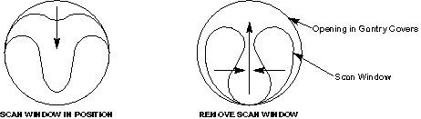
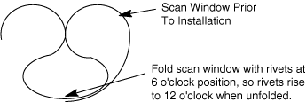
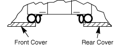

Operating Documentation
Direction 5307452-8EN, Rev# 4
Discovery CT750 HD Service Methods - Adv
Operating Documentation |
| Required Persons | Preliminary Reqs | Procedure | Finalization |
|---|---|---|---|
| 1 | Timing Not Applicable | 10 mins | 10 mins |
This procedure explains how to remove and re-install the CT Gantry Scan Window.
| Last Revised: | May 5, 2008 |
| Potential for Equipment Damage. The cones of the front and rear gantry covers must be aligned within specification to ensure proper scan window fit. If the scan window is not fit properly, fluids can get into the collimator and detector, causing image artifacts or permanent damage | |
| Follow ALL required safety and PPE procedures customary for your organization, when working on this product. | |
| Condition | Reference | Eff |
|---|---|---|
Only trained service personnel should service the GE CT Scanner. | - | - |
This procedure assumes the front and rear covers are installed. | - | - |
Grab the window at the top and pull firmly downward.
Pull the scan window down from the top center and then grasp both sides of the scan window, move them together and lightly pull upward, until you can free the window from between the front and rear covers. See Illustration 1.
| NOTE: | You may need to use the tip of a flat blade screwdriver to pull down the top edge of the scan window away from the cover in order to grab it with your fingers. Be careful not to push the screwdriver in too far as the gasket can be damaged. |
Illustration 1: Scan Window Removal

| Potential for Equipment Damage. The cones of the front and rear gantry covers must be aligned within specification to ensure proper scan window fit. If the scan window is not fit properly, fluids can get into the collimator and detector, causing image artifacts or permanent damage. See Scan Window Alignment. | |
Install the front and rear covers if not already done.
Inspect the outside diameter of the scan window to make sure the gaskets are clean and clear of any debris or contrast. The gaskets must be clean to ensure a good seal against any future liquid spills.
Flex the scan window, as shown in Illustration 2, and nest the scan window at the bottom of the opening between the front and rear covers, ( Illustration 3) aligning the laser port labels with the lasers at the 3 and 9 o'clock positions (left and right side).
After you complete the initial seating of scan window, let the window slowly unfold, and work both sides of the window into position, starting at the bottom and finishing at the top. Make sure you position the window with the laser port labels aligned at the 3 and 9 o’clock position. See the following illustrations for reference.
Illustration 2: Install Scan Window

Illustration 3: Scan Window Nested Between Front and Rear Cover

Illustration 4: Laser Port Alignment to scan window

Perform retest scans per the procedure that caused the covers to be removed. If removing the scan window independent of performing any other service procedure, then scan the water phantom. Perform (20) Axial slices at 5mm aperture. Inspect all images for ring or band artifacts.
| NOTE: | Scans must be run to verify the scan window is not causing any issues. |